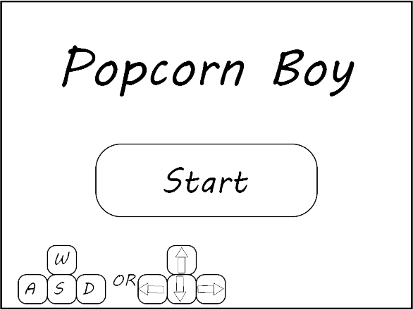

1. High Concept
In Popcorn Boy you play as an Usher at a movie theater, cleaning up popcorn and drink spills while dodging customer complaints before the timer runs out
2. Genre
Popcorn Boy is an action platformer
3. Platform
Web-based for desktops and laptops
4. Story
You're an Usher working at a movie theater
5. Aesthetics
Popcorn boy is a pixel-art game with an 8-bit soundtrack on a loop with sound effects
6. Gameplay
Mechanics
The player can run, jump, sweep with their broom, grab a bucket to mop, and flip off customers to bounce their complaints back at them or else they are stunned for a few seconds
Control
You use purely a keyboard, with either arrow keys or WASD to move, U to sweep/mop, I to grab the bucket, O to flip off the customers, and P to pause the game
Onboarding
The game starts with a screen where you choose whether you're using WASD or arrow keys, with the rest of the actions displayed there. You are then shown a screen giving the basic mechanics of the game
Player Learning
The player has to learn how to manage their time, as each action will take a certain amount of time. This means that the skill curve is based around the player's sense of prioritization and task management on the fly
7. Screenshots

8. About the Developer
My name is Iain Davis, I'm a 2nd-year Game Design and Development student with a very strong computer science background and a growing interest in the design aspects of making games